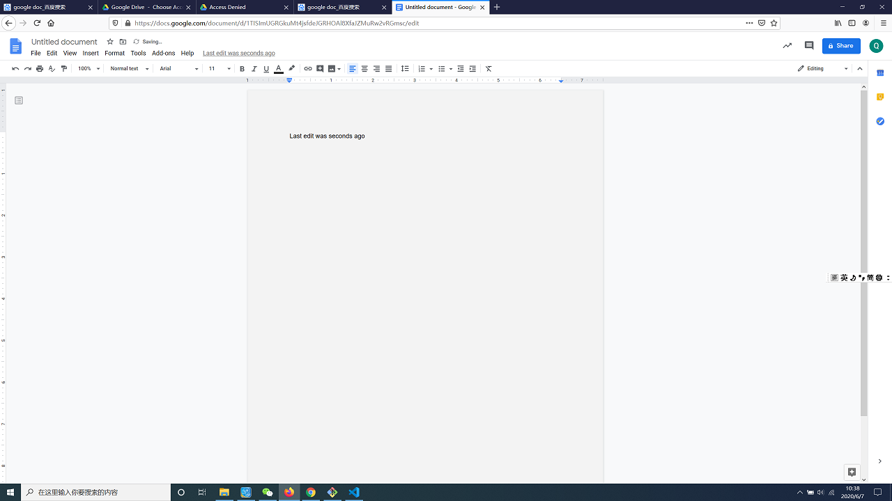

1. The google doc did a really good job on the web site development, it is very clear for users to find almost every function directly. When you write content in google doc, the system will automatically saved what you writed, it shows in the top of the page- Last edit was happen xx seconds.

2. The google is designed for the whole world, because you can find the language you speak, whatever the language you used, the function is same as before. It can achieve everything you can think of, for example, if you want to center align your works, it is certainly possible.
3. About user control and freedom, The google doc really make users satisfied. Once you make mistakes on your work, just redo and undo in the top left, left arrow helps you undo and right arrow helps you redo, or in another way, you can directly put Ctrl+v/Ctrl+y to redo and undo.
4. When you do your work in the google doc, you do not care about the wrong meaning of words, because the google provides dictionary for user to reference when they are doing their job.
5. The google doc provides error correction for users, When you are required to think about spells and grammar problems, you do not need to search on the internet, the goold doc will give you right choice.
6. The google doc has clearly searching system, when you writing your essay and want to find some parts you write on previous page, just search in the google doc.
7. The google doc is connected to your google account, you do not need to care about whether you can only work on the single computer, just sign in your google account, you will get your work automatically.
8. The google doc is the simplest tools that I have seen before, It contains everything you needed, you can not find anything that irrelevant to your works.
9. Like I said before, the google doc will mark the error by Red wave line, then the doc will give you advised edited choice, just right click the words, you will see it
10. You can use explore under tools, there will be a google searching engine shown, then you can find anything you want, it located in the right of the whole page, it makes users can reference the work and directly edited their works.